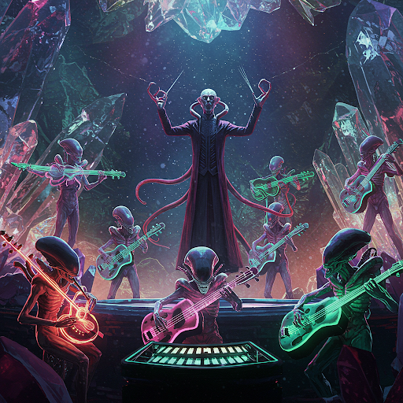
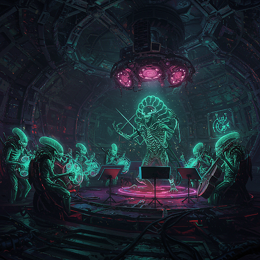
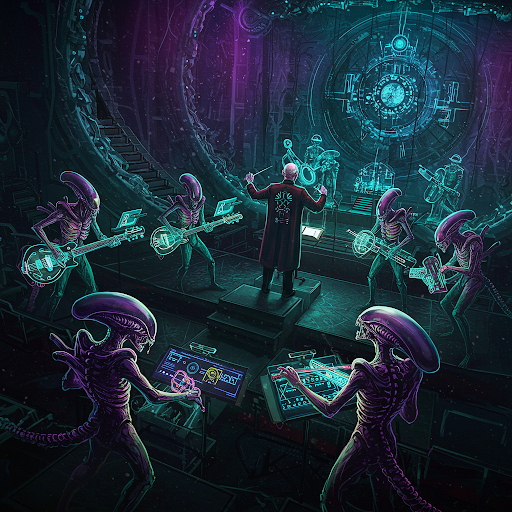
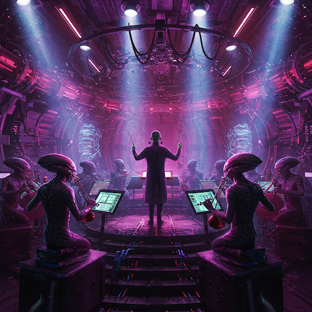
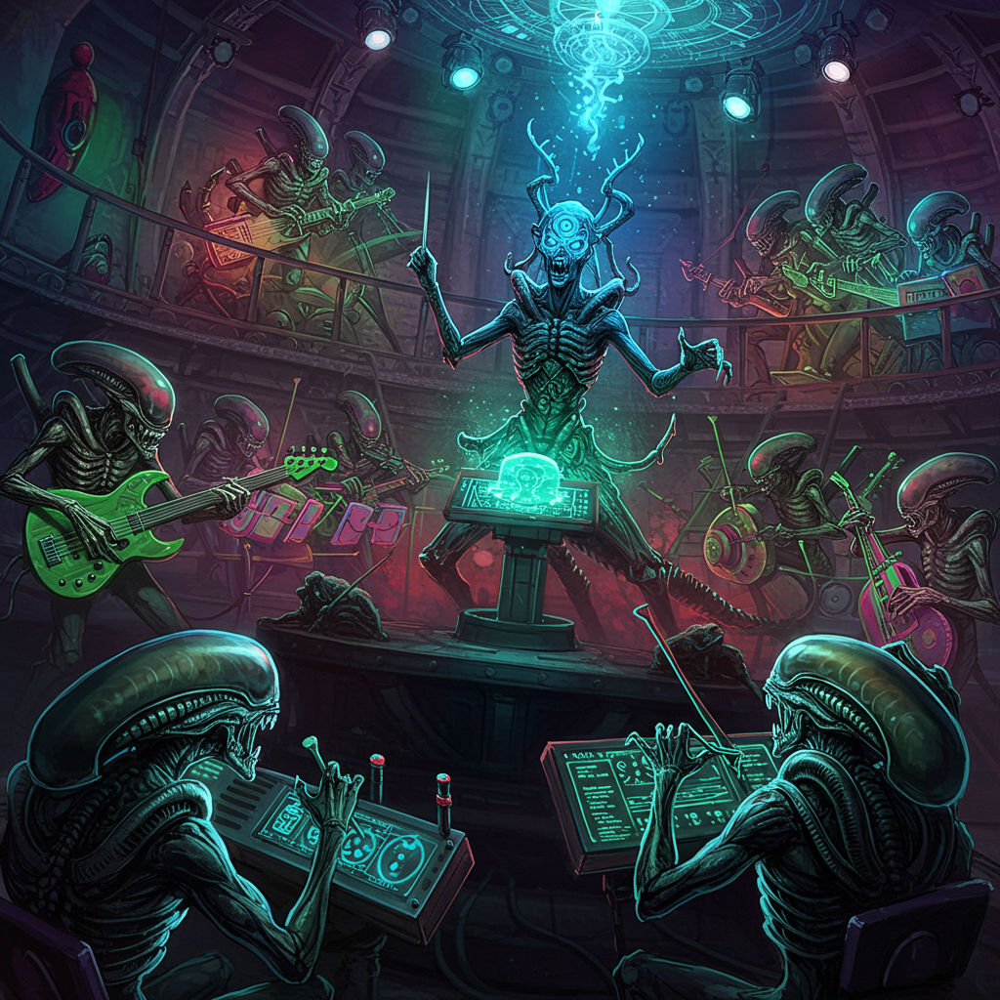
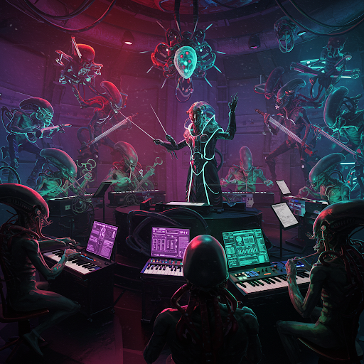
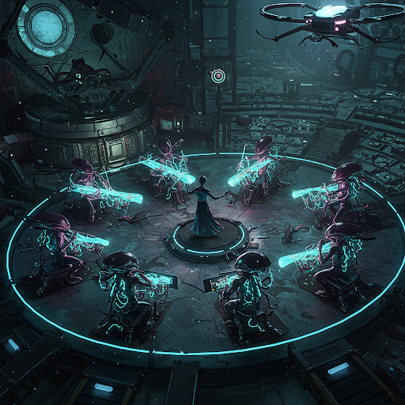
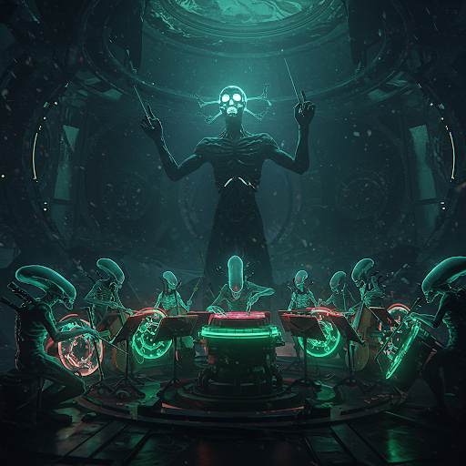

ZΩRBLAXian VOID PULSE COLLECTIVE
CONCERT I: COSMIC SENSORY CONVERGENCE: STELLAR VOYAGE

- Stardate 2025.108-109 | Harmonic Alignment: 22:00
- Conductor: Multi-Dimensional Maestro ZEROX-9
- Repertoire: "CELESTIAL BODIES IN MOTION," "GRAVITATIONAL HARMONICS," "GALACTIC SYNTHESIS," "INTERSTELLAR JOURNEY," "COSMIC ENLIGHTENMENT"
- The Crystal Nebula, Interdimensional Sound Pavilion
The enigmatic ZEROX-9, whose conducting technique has been described as "transcendentally mesmerizing" across seven galaxies, guides the vibrant collective known as the ZΩRBLAXian VOID PULSE COLLECTIVE through an evening of cosmic wonder. Experience the breathtaking premiere of "CELESTIAL BODIES IN MOTION," a suite that builds from delicate whispers to magnificent crescendos, performed on instruments crafted from rare metals found only on distant moons and responsive to audience brainwave patterns. The repertoire explores the hidden dimensions of the universe with compositions including "GRAVITATIONAL HARMONICS" (featuring synchronized breathing techniques), "GALACTIC SYNTHESIS" (where sound waves create visual phenomena throughout the venue), and "INTERSTELLAR JOURNEY" (causing spontaneous neural connections across multiple dimensions). The night culminates in "COSMIC ENLIGHTENMENT"—an immersive experience where sound transcends auditory perception and transforms consciousness itself. Private resonance chambers available for those seeking enhanced acoustic experiences.
Dress code: Reflective, light-responsive attire recommended for optimal visual integration.
Molecular refreshments from distant star systems served at intermission.
CONCERT II: QUANTUM RESONANCE EXPLORATION: VOID ECHOES
- Stardate 2025.142-143 | Quantum Flux: 21:00
- Conductor: Void Navigator K'THX-7
- Repertoire: "PRIMORDIAL OSCILLATIONS," "QUASAR WHISPERS," "NEBULA DREAMS," "ANTIMATTER SYMPHONY," "EVENT HORIZON REQUIEM"
- The Antimatter Amphitheater, Floating Quantum Observatory
The legendary K'THX-7, who once conducted a supernova into harmonic stability, commands the Freeky Deeky Intergalactic Orchestra through the unexplored realms of quantum acoustics. Witness the universe-altering premiere of "PRIMORDIAL OSCILLATIONS," performed on instruments that exist simultaneously in twelve dimensions and resonate with the background radiation of creation itself. The program defies conventional physics with pieces including "QUASAR WHISPERS" (employing tonal frequencies that briefly suspend gravity around listeners), "NEBULA DREAMS" (where celestial gas patterns are translated into cascading arpeggios), and "ANTIMATTER SYMPHONY" (requiring specialized ear protection to prevent molecular destabilization). The performance concludes with the revolutionary "EVENT HORIZON REQUIEM"—a composition that bends spacetime through sound alone, allowing audiences to perceive music from multiple timelines simultaneously. Quantum stabilization suits provided.
Note: The concert may appear to last between 20 minutes and 75 years depending on your position in the amphitheater.
Chrono-synchronization therapy available post-concert.
CONCERT III: INTERSPECIES HARMONIZATION: GALACTIC CHORUS
- Stardate 2025.173-174 | Biorhythmic Synchronization: 19:30
- Conductor: The Hive-Mind Orchestrator BZZT-Ω
- Repertoire: "UNIVERSAL TRANSLATION SUITE," "EXOBIOLOGICAL CANTATA," "TELEPATHIC FUGUE," "MULTI-ORGANISM SYMPHONY," "CONVERGENT EVOLUTION CONCERTO"
- The Xenobiological Soundsphere, Galactic Diplomacy Hub
The controversial genius BZZT-Ω, composed of 17,000 synaptically linked micro-organisms forming a singular consciousness, leads the Freeky Deeky Intergalactic Orchestra in a groundbreaking cross-species musical exchange. Experience the biologically transformative premiere of "UNIVERSAL TRANSLATION SUITE," utilizing instruments grown from living tissue that adapt their tonal qualities to match the neurological patterns of each audience member's species. The program dissolves biological barriers through compositions including "EXOBIOLOGICAL CANTATA" (featuring vocalists with surgically modified vocal tracts), "TELEPATHIC FUGUE" (inducing mild psychic links between audience members), and "MULTI-ORGANISM SYMPHONY" (where musical motifs evolve in real-time based on collective emotional response). The evening culminates with "CONVERGENT EVOLUTION CONCERTO"—a revolutionary piece where sound becomes a common language transcending biological differences. Translation microbes provided at entrance.
Warning: Attendees may experience temporary genetic resonance with other species.
DNA realignment stations available post-concert.
CONCERT IV: TEMPORAL PARADOX PERFORMANCE: CHRONOS UNBOUND
- Stardate 2025.211-212 | Temporal Coordinates Fluctuating
- Conductor: Chrono-Maestro AEON-∞ (Past, Present, and Future Iterations)
- Repertoire: "ANCESTOR ALGORITHM," "PRESENT TENSE VARIATIONS," "FUTURE PROBABILITY NOCTURNE," "PARADOX PRELUDE," "TIMELINE CONVERGENCE SONATA"
- The Möbius Concert Hall, Temporal Anomaly Zone
The impossible AEON-∞, who simultaneously exists across multiple timelines, conducts three temporal versions of the Freeky Deeky Intergalactic Orchestra in the first-ever (and already legendary) time-bending concert. Witness the has-will-is-happening premiere of "ANCESTOR ALGORITHM," performed on archaic instruments by the past orchestra, contemporary instruments by the present orchestra, and instruments not-yet-invented by the future orchestra, creating a harmonic convergence across time itself. The reality-warping program includes "PRESENT TENSE VARIATIONS" (where notes are played before they're conducted), "FUTURE PROBABILITY NOCTURNE" (which statistically predicts and plays each audience member's favorite future composition), and "PARADOX PRELUDE" (causing listeners to remember the music before hearing it). The performance concludes/began/will begin with "TIMELINE CONVERGENCE SONATA"—a piece that exists in quantum superposition until observed. Temporal displacement sickness bags provided.
Note: You may encounter alternate versions of yourself during intermission.
Chronology protection enforcers will prevent audience members from altering their own timelines.
CONCERT V: SUBATOMIC SOUND EXPLORATION: QUANTUM FREQUENCIES
- Stardate 2025.247-248 | Planck-Scale Precision: 20:30
- Conductor: Particle Whisperer HIGGS-β
- Repertoire: "QUARK QUARTET," "STRING THEORY SONATA," "PARTICLE WAVE DUALITY DANCE," "QUANTUM ENTANGLEMENT ETUDE," "UNIFIED FIELD SYMPHONY"
- The Subatomic Sound Chamber, Particle Accelerator Complex
The microscopic genius HIGGS-β, whose consciousness exists at the quantum level, directs the Freeky Deeky Intergalactic Orchestra in exploring the smallest scales of reality through sound. Experience the uncertainty-principle-defying premiere of "QUARK QUARTET," utilizing instruments smaller than atoms that generate probabilities rather than definite notes, creating music that changes when observed directly. The program manipulates fundamental forces with compositions including "STRING THEORY SONATA" (employing 11-dimensional harmonics), "PARTICLE WAVE DUALITY DANCE" (where each note simultaneously behaves as a discrete tone and a continuous frequency), and "QUANTUM ENTANGLEMENT ETUDE" (creating paired sounds that instantaneously affect each other regardless of distance). The evening concludes with "UNIFIED FIELD SYMPHONY"—a composition theoretically linking all four fundamental forces through acoustic principles. Size-altering technology temporarily reduces audience members to quantum scale for optimal listening experience.
Warning: Concert may cause temporary superposition of consciousness.
attendance is probabilistic until observed.
CONCERT VI: PSYCHONAUTIC JOURNEY: CONSCIOUSNESS EXPANSION
- Stardate 2025.284-285 | Mind Meld: 23:00
- Conductor: Neural Navigator SYNAPSE-δ
- Repertoire: "EGO DISSOLUTION OVERTURE," "COLLECTIVE UNCONSCIOUS RHAPSODY," "ARCHETYPAL VARIATIONS," "PERCEPTION THRESHOLD CROSSING," "TRANSCENDENTAL MIND STATE FINALE"
- The Psychic Resonance Arena, Consciousness Research Institute
The boundary-dissolving SYNAPSE-δ, who achieved complete neural interconnection with all sentient life forms in the Crab Nebula, guides the Freeky Deeky Intergalactic Orchestra through the uncharted territories of consciousness itself. Witness the mind-altering premiere of "EGO DISSOLUTION OVERTURE," performed on instruments that respond directly to thought patterns and generate frequencies that temporarily reorganize neural pathways. The program explores inner space with compositions including "COLLECTIVE UNCONSCIOUS RHAPSODY" (accessing shared archetypal imagery across species), "ARCHETYPAL VARIATIONS" (where musical themes transform according to each listener's deepest psychological patterns), and "PERCEPTION THRESHOLD CROSSING" (gradually introducing sounds normally beyond sensory capability). The experience culminates with "TRANSCENDENTAL MIND STATE FINALE"—a composition inducing temporary group consciousness among all present. Memory recovery assistance available post-concert.
Disclaimer: The Orchestra is not responsible for spiritual awakenings, existential realizations, or sudden career changes resulting from attendance.
CONCERT VII: MULTISENSORY SYNTHESIS: SYNAESTHETIC VOYAGE
- Stardate 2025.319-320 | Sensory Convergence: 20:00
- Conductor: Pan-Sensory Architect CHROMA-Ψ
- Repertoire: "VISIBLE FREQUENCIES," "TACTILE RESONANCE SUITE," "OLFACTORY HARMONICS," "GUSTATORY RHYTHMS," "COMPLETE SENSORY INTEGRATION"
- The Synaesthetic Sphere, Cross-Modal Perception Center
The revolutionary CHROMA-Ψ, whose neural modifications allow simultaneous processing of all sensory information as a unified experience, leads the Freeky Deeky Intergalactic Orchestra in dissolving the boundaries between perception channels. Experience the sense-defying premiere of "VISIBLE FREQUENCIES," utilizing instruments that simultaneously produce sounds, colors, aromas, textures, and flavors in perfect harmonic alignment. The program transcends traditional sensory limitations with compositions including "TACTILE RESONANCE SUITE" (where bass frequencies create intricate patterns on the skin), "OLFACTORY HARMONICS" (synchronizing complex scent progressions with melodic development), and "GUSTATORY RHYTHMS" (dispersing flavor molecules that dance across taste receptors in rhythmic patterns). The evening culminates with "COMPLETE SENSORY INTEGRATION"—a revolutionary composition experienced simultaneously through all perceptual channels. Temporary neural pathway reconfiguration provided at entry.
Warning: May cause permanent enhancement of cross-modal associations.
Sensory recalibration stations available post-concert.
CONCERT VIII: GRAVITATIONAL WAVE PERCUSSION: SPACETIME RIPPLES
- Stardate 2025.352-353 | Spacetime Curvature: 21:30
- Conductor: Gravity Sculptor LIGO-Z
- Repertoire: "BINARY STAR COLLISION PERCUSSION," "BLACK HOLE MERGER OSTINATO," "NEUTRON STAR RHYTHM CYCLE," "SPACE FABRIC VIBRATIONS," "MASS DISTORTION SYMPHONY"
- The Gravitational Amphitheater, Space Curvature Observatory
The heavyweight innovator LIGO-Z, who once detected a supermassive black hole merger through pure acoustic sensitivity, commands the Freeky Deeky Intergalactic Orchestra in manipulating the fabric of spacetime through rhythm. Witness the mass-altering premiere of "BINARY STAR COLLISION PERCUSSION," using instruments so massive they generate their own gravitational fields, creating music through actual spacetime distortions. The program warps reality with compositions including "BLACK HOLE MERGER OSTINATO" (producing rhythmic patterns that temporarily increase the local gravitational constant), "NEUTRON STAR RHYTHM CYCLE" (compressing sound waves to neutron-star density), and "SPACE FABRIC VIBRATIONS" (where percussion instruments strike spacetime itself). The concert concludes with "MASS DISTORTION SYMPHONY"—an unprecedented composition where audience members physically feel their mass fluctuate in rhythm with the music. Inertial dampeners provided at entry.
Note: The concert's gravitational effects may cause temporal dilation; what feels like 2 hours may be 4 minutes in the outside world.
CONCERT IX: DIMENSIONAL TRANSMIGRATION: BEYOND THE VEIL
- Stardate 2025.029-030 | Interdimensional Aperture: 00:00
- Conductor: The Boundary Breaker NULL-Ø
- Repertoire: "FIFTH DIMENSION PRELUDE," "PARALLEL REALITY VARIATIONS," "INTERDIMENSIONAL PORTAL SOUNDSCAPE," "MULTIVERSE HARMONIC CONVERGENCE," "TRANSDIMENSIONAL RETURN"
- The Liminal Concert Void, Dimensional Boundary Research Station
The impossible entity NULL-Ø, whose existence violates conventional dimensional physics, guides the Freeky Deeky Intergalactic Orchestra in the first-ever concert performed simultaneously across multiple realities. Experience the boundary-dissolving premiere of "FIFTH DIMENSION PRELUDE," utilizing instruments that physically extend beyond three-dimensional space and generate tones that temporarily allow perception of higher dimensions. The program transcends reality constraints with compositions including "PARALLEL REALITY VARIATIONS" (where each performance is different in every dimension, yet harmonically linked), "INTERDIMENSIONAL PORTAL SOUNDSCAPE" (creating temporary gateways to alternate realities through resonant frequencies), and "MULTIVERSE HARMONIC CONVERGENCE" (synchronizing acoustic patterns across countless parallel existence planes). The evening concludes with "TRANSDIMENSIONAL RETURN"—a grounding composition that gently returns consciousness to standard dimensional parameters. Dimensional anchoring tethers provided to prevent permanent interdimensional drift.
Warning: Some audience members may briefly perceive their alternate selves.
Reality reintegration counseling available post-concert.
CONCERT X: UNIVERSAL ENTROPY REVERSAL: THERMODYNAMIC DEFIANCE

- Stardate 2026.001-002 | Entropic Inversion Point: 23:59
- Conductor: The Second Law Defier ENTROPY-α
- Repertoire: "CHAOTIC DECAY INVERSION," "THERMODYNAMIC ARROW REVERSAL," "ORDER FROM CHAOS SUITE," "PROBABILITY FIELD MANIPULATION," "ENTROPIC RESURRECTION FINALE"
- The Thermodynamic Null Zone, Universal Heat Death Research Facility
The paradoxical phenomenon ENTROPY-α, who exists in direct violation of fundamental thermodynamic principles, leads the Freeky Deeky Intergalactic Orchestra in the universe's first (and potentially last) entropy-reversing concert. Witness the laws-of-physics-defying premiere of "CHAOTIC DECAY INVERSION," utilizing instruments in states of quantum disorder that spontaneously achieve perfect synchronization, momentarily reversing the flow of entropy in the concert space. The program challenges fundamental reality with compositions including "THERMODYNAMIC ARROW REVERSAL" (where shattered crystal instruments reassemble through sound alone), "ORDER FROM CHAOS SUITE" (spontaneously organizing random particle movements into intricate patterns), and "PROBABILITY FIELD MANIPULATION" (making impossibly improbable notes not merely possible but inevitable). The universe-altering experience concludes with "ENTROPIC RESURRECTION FINALE"—a revolutionary composition that temporarily reverses the aging process in all organic audience members. Chronological stabilizers provided to prevent permanent temporal displacement.
Caution: Side effects may include localized reality breakdowns, spontaneous quantum rejuvenation, and temporary immortality.